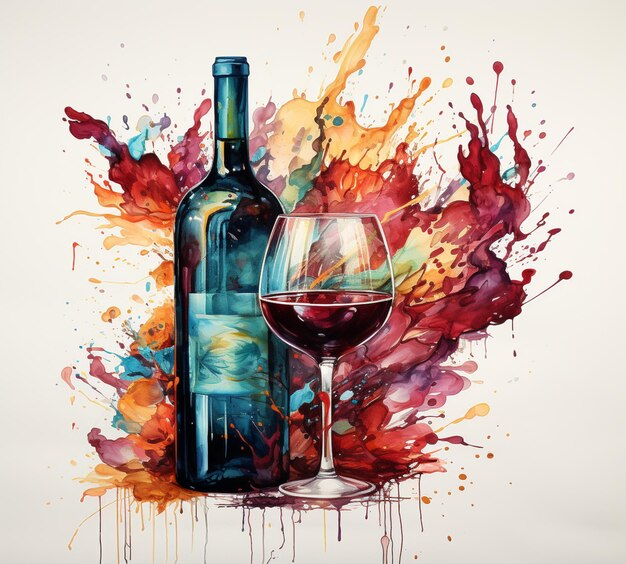

Divine God Wine
A Divine Sip
Embark on a celestial journey with God Wine, a divine elixir that transcends ordinary libations. This exquisite creation unveils a secret bestowed upon us by Odin himself, the benevolent god of wisdom. With unparalleled generosity, Odin shared the ancient recipe, infusing each bottle with a touch of divine mystique. God Wine is more than a beverage; it's a testament to the harmony of flavors curated by a god, enriching every sip with celestial essence.
Crafted with the finest ingredients and guided by Odin's celestial wisdom, God Wine invites you to partake in a taste that transcends the ordinary. The culmination of this divine secret reveals a libation that embodies the generosity of the gods, elevating your moments into an experience that resonates with timeless grace. Indulge in the celestial nectar that is God Wine, where each bottle whispers the ancient wisdom of Odin, a gift to those who appreciate the finer things in life.